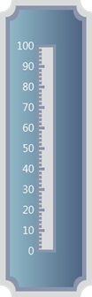

Major Ticks are the primary scale indicators.
Minor Ticks are the secondary scale indicators.
TickStyle property of the tick element specifies the number of the value intervals along the entire length of the scale bar.
These major and minor ticks are built with customization options like height and width property. They are also shipped with some inbuilt tick shapes. The tick shapes which are available are listed below.
· Ellipse
· Rectangle
· Rounded Rectangle
· Triangle
You can set the location of the ticks based on the scale position using the DistanceFromScale propertyand the TickPlacement property. Both properties are used to control the location of ticks , but you can set the distance that needs to be maintained to present the ticks from the scale using DistanceFromScale property.You can specify from where the distance will be calculated using TickPlacement property. It may be outside the scale or inside the scale or at the center of the scale.
Properties
|
Property |
Description |
Type of Property |
Value It Accepts |
Any other dependencies/Sub properties associated |
|
TickStyle |
Sets the tick style for the circular mark tick. Default value is major tick. |
enum |
TickStyle.MajorTick
TickStyle.MinorTick |
NA |
|
TickShape |
Sets the tick shape for the circular mark tick. |
enum |
TickShape.Ellipse
TickShape.Rectangle
TickShape.RoundedRectangle
TickShape.Triangle |
NA |
|
TickHeight |
Sets the tick height. |
double |
double |
NA |
|
TickWidth |
Sets the tick width. |
double |
double |
NA |
|
Angle |
Sets the angle rotation of ticks. |
double |
double |
NA |
|
BackgroundBrush |
Sets the background brush for ticks. |
System.Windows.Media.Brushes |
Refer to the following Link for Value for the Brushes class |
NA |
|
BorderBrush |
Sets the border brush for ticks. |
System.Windows.Media.Brushes |
Refer to the followed Link for Value for the Brushes class |
NA |
|
TickPlacement |
Sets the placement for ticks. |
enum |
ScalePlacement.Cross
ScalePlacement.Inside
ScalePlacement.Outside |
NA |
|
RangedBrush |
Sets an alternate brush to the ticks (apart from the brush provided by the BackgroundBrush property) for a range specified, using the RangedBrushStartValue and RangedBrushEndValue properties. |
System.Windows.Media.Brushes |
Refer to the followed Link for Value for the Brushes class |
NA |
|
RangedBrushStartValue |
Sets the start value from where the ticks should be painted with the alternate brush stored in the RangedBrush property. |
double |
double |
NA |
|
RangedBrushEndValue |
Sets the end value up to which the ticks should be painted with the alternate brush stored in the RangedBrush property. |
double |
double |
NA |
Step 1:
View:
Add the below code in your aspx file. Using Ticks mapper, you can add tick elements for the linear scale.
|
View[ASPX] <%@ Page Language="C#" MasterPageFile="~/Views/Shared/Site.Master" Inherits="System.Web.Mvc.ViewPage" %> <asp:Content ID="Content1" ContentPlaceHolderID="TitleContent" runat="server"> Linear Gauge </asp:Content>
<asp:Content ID="Content2" ContentPlaceHolderID="MainContent" runat="server">
<%=Html.Syncfusion().LinearGauge("Gauge") .Height(420) .Width(130) .GaugeSkins(GaugeSkins.VS2010) .Orientation(GaugeOrientation.Vertical) .FrameType(LinearGaugeFrameType.CroppedRectangle) .Scales(scale => { scale.Add() .Maximum(100) .Minimum(0) .MajorIntervalValue(10) .MinorIntervalValue(2) .ScaleBarSize(24) .ScaleDirection(ScaleDirection.CounterClockwise) .BorderWidth(4) .ScaleBarLength(290) // Adding major and Minor Tick elements. .Ticks(Tick => {
Tick.Add() .Angle(180) .TickHeight(10) .TickShape(TickShape.Rectangle) //Specifying the Tickstyle. here major ticks are added. .TickStyle(TickStyle.MajorTick)
//Setting the position for the major ticks. .DistanceFromScale(-24) .TickPlacement(ScalePlacement.Outside) .TickWidth(4); Tick.Add() .Angle(180) //Specifying the height and width for the minor ticks. .TickHeight(6) .TickWidth(4) .TickShape(TickShape.Rectangle) //Specifying the Tickstyle. Here minor ticks are added. .TickStyle(TickStyle.MinorTick) //Setting the position for the minor ticks. .TickPlacement(ScalePlacement.Outside) .DistanceFromScale(-24);
}) .Labels(label => { label.Add() .DistanceFromScale(5) .FontSize(15) .TickPlacement(ScalePlacement.Inside) .TickStyle(TickStyle.MajorTick) .Angle(0); }); })
%>
</asp:Content> |
|
View[cshtml] <div> @{ Html.Syncfusion().LinearGauge("Gauge") .Height(420) .Width(130) .GaugeSkins(GaugeSkins.VS2010) .Orientation(GaugeOrientation.Vertical) .FrameType(LinearGaugeFrameType.CroppedRectangle) .Scales(scale => { scale.Add() .Maximum(100) .Minimum(0) .MajorIntervalValue(10) .MinorIntervalValue(2) .ScaleBarSize(24) .ScaleDirection(ScaleDirection.CounterClockwise) .BorderWidth(4) .ScaleBarLength(290) // Adding major and minor tick elements. .Ticks(Tick => {
Tick.Add() .Angle(180) .TickHeight(10) .TickShape(TickShape.Rectangle) //Specifying the Tickstyle. here major ticks are added. .TickStyle(TickStyle.MajorTick)
//Setting the position for the major ticks. .DistanceFromScale(-24) .TickPlacement(ScalePlacement.Outside) .TickWidth(4); Tick.Add() .Angle(180) //Specifying the height and width for the minor ticks. .TickHeight(6) .TickWidth(4) .TickShape(TickShape.Rectangle) //Specifying the Tickstyle. Here minor ticks are added. .TickStyle(TickStyle.MinorTick) //Setting the position for the minor ticks. .TickPlacement(ScalePlacement.Outside) .DistanceFromScale(-24);
}) .Labels(label => { label.Add() .DistanceFromScale(5) .FontSize(15) .TickPlacement(ScalePlacement.Inside) .TickStyle(TickStyle.MajorTick) .Angle(0); }); }).Render(); } </div> |
Step 2:
Controller:
Add the below code in your controller.
|
using System; using System.Collections.Generic; using System.Linq; using System.Web; using System.Web.Mvc;
namespace LinearGauge.Controllers { [HandleError] public class HomeController : Controller { public ActionResult Index() {
return View(); }
} } |
Step 3:
Run the Code. You will get the following output.

Figure 101: Linear Gauge-Ticks
Step 1:
View:
Add the below code in your aspx file.
|
View[ASPX] <%@ Page Language="C#" MasterPageFile="~/Views/Shared/Site.Master" Inherits="System.Web.Mvc.ViewPage" %> <asp:Content ID="Content3" ContentPlaceHolderID="TitleContent" runat="server"> Linear Gauge </asp:Content>
<asp:Content ID="Content4" ContentPlaceHolderID="MainContent" runat="server"> <%--Rendering the linear gauge--%> <%=Html.Syncfusion().LinearGauge("Gauge", (LinearGaugeModel)ViewData["GaugeModel"])%>
</asp:Content> |
|
View[cshtml] <div> @*--Rendering the linear gauge--*@ @Html.Syncfusion().LinearGauge("Gauge", (LinearGaugeModel)ViewData["GaugeModel"])
</div> |
Step 2:
Controller:
Add the below code in your controller. Using the TickMark Class, you can create the tick elements for the linear scale.
Using the Ticks collection of LinearScale class, you can add the TickMark element.
|
using System; using System.Collections.Generic; using System.Linq; using System.Web; using System.Web.Mvc; using Syncfusion.Mvc.Gauge; using Syncfusion.Mvc.Shared; using System.Windows.Media;
namespace LinearGauge.Controllers { [HandleError] public class HomeController : Controller { public ActionResult Index() { LinearGaugeModel model = new LinearGaugeModel(); model.FrameType = LinearGaugeFrameType.CroppedRectangle; model.GaugeSkins = GaugeSkins.VS2010; model.Height = 420; model.Width = 130; model.Orientation = GaugeOrientation.Vertical;
LinearScale l_Scale = new LinearScale(); l_Scale.Maximum = 100; l_Scale.Minimum = 0; l_Scale.MinorIntervalValue = 2; l_Scale.MajorIntervalValue = 10; l_Scale.BackgroundBrush = Brushes.White; l_Scale.ScaleBarSize = 24; l_Scale.ScaleBarLength = 290; l_Scale.ScaleDirection = ScaleDirection.CounterClockwise; l_Scale.BorderWidth = 4;
GaugeLabelTick c_LabelTick = new GaugeLabelTick(); c_LabelTick.TickStyle = TickStyle.MajorTick; c_LabelTick.FontSize = 15; c_LabelTick.DistanceFromScale = 5; c_LabelTick.TickPlacement = ScalePlacement.Inside; c_LabelTick.Angle = 0;
//Creating Minor tick elements. TickMark _minor = new TickMark(); //Specifying the shape for the minor ticks. _minor.TickShape = TickShape.Rectangle; _minor.TickStyle = TickStyle.MinorTick; //Setting height and width for the minor ticks. _minor.TickWidth = 4; _minor.TickHeight = 6; //Setting the position of the minor ticks. _minor.DistanceFromScale = -24; _minor.TickPlacement = ScalePlacement.Outside; _minor.Angle = 180;
//Creating major tick elements. TickMark _major = new TickMark(); //Specifying the shape for the major ticks. _major.TickShape = TickShape.Rectangle; _major.TickStyle = TickStyle.MajorTick; //Setting height and width for the major ticks. _major.TickWidth = 4; _major.TickHeight = 10; //Setting the position of the major ticks. _major.DistanceFromScale = -24; _major.TickPlacement = ScalePlacement.Outside; _major.Angle = 180;
//Adding major and minor tick elements for the linear scale. l_Scale.Ticks.Add(_minor); l_Scale.Ticks.Add(_major); l_Scale.Labels.Add(c_LabelTick);
model.Scales.Add(l_Scale);
ViewData["GaugeModel"] = model; return View(); }
} } |
Step 3:
Run the Code. You will get the below output.
Figure 102: Linear Gauge-Ticks